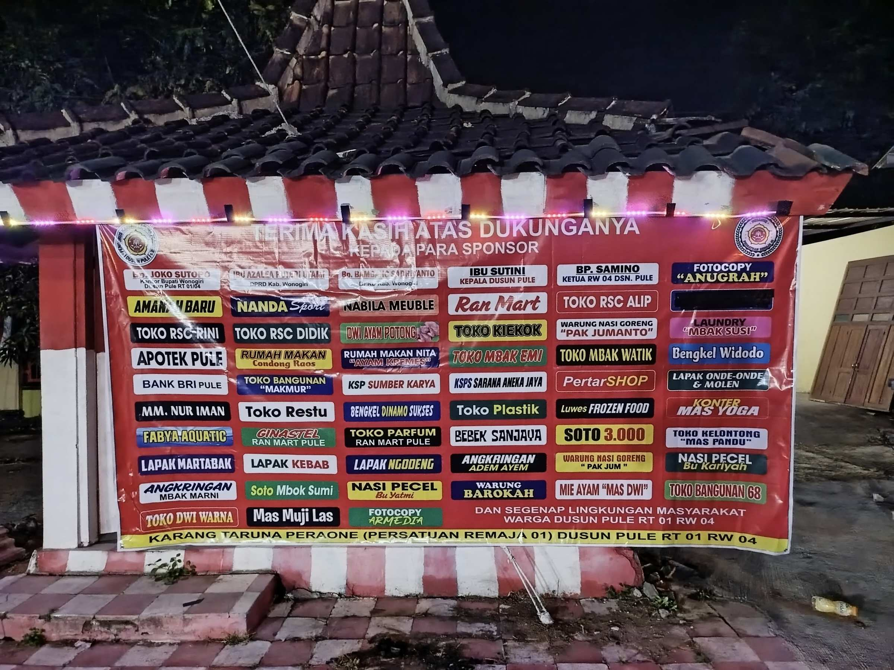
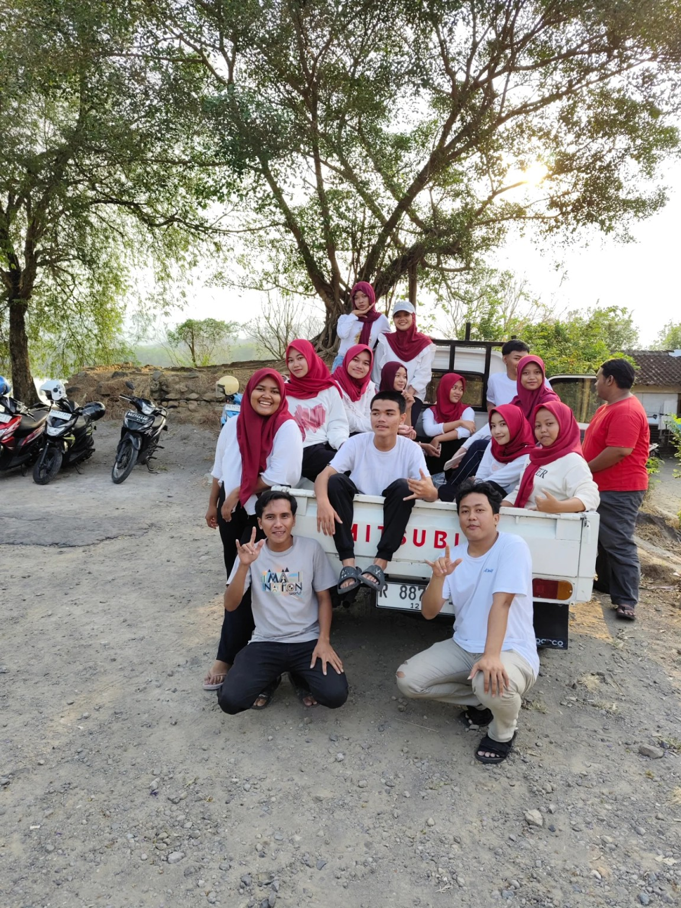
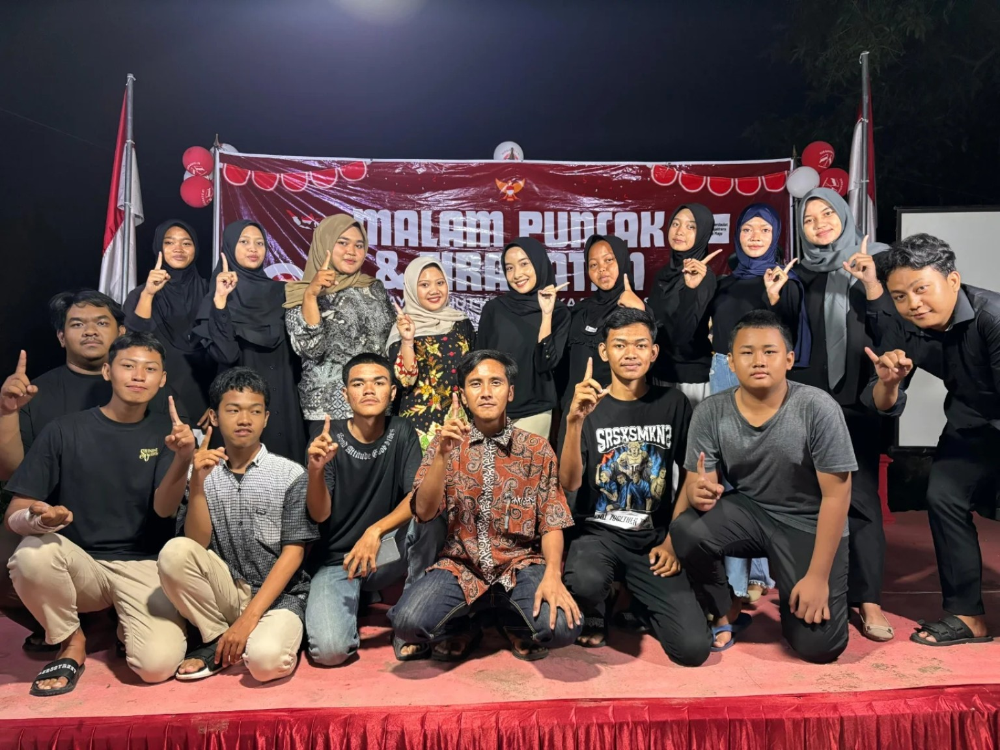
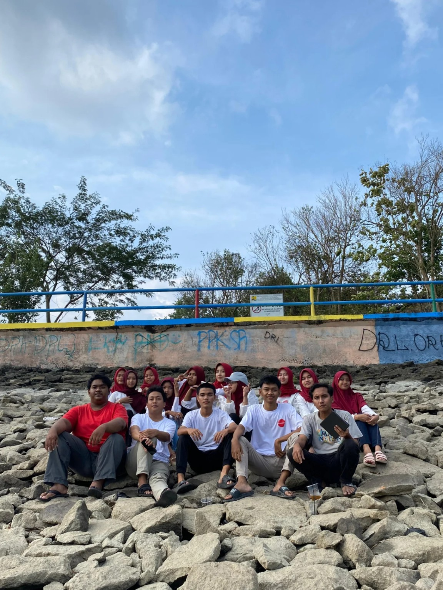
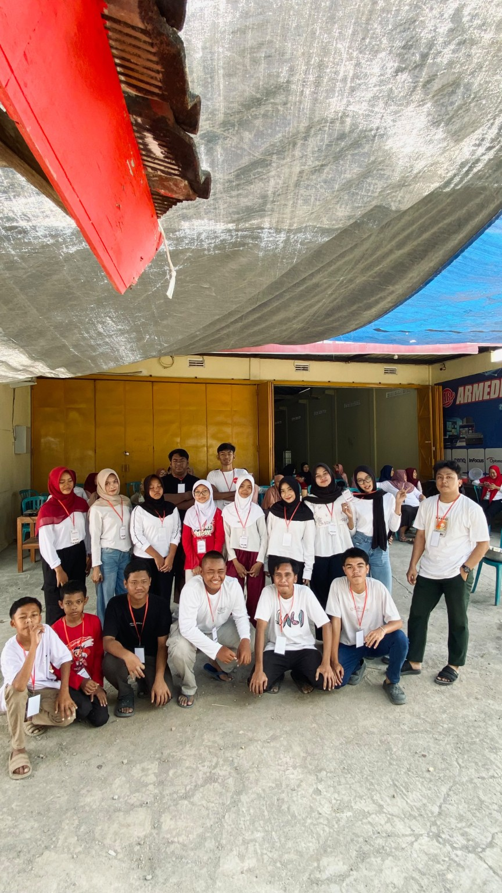

Bersama Membangun
Generasi Desa
Wadah generasi muda untuk membangun kekompakan, kebersamaan, kepedulian, dan semangat gotong royong dalam menciptakan lingkungan yang lebih baik.
Karang Taruna PERAONEPULE
Karang Taruna PERAONEPULE merupakan wadah bagi generasi muda untuk membangun kekompakan, kebersamaan, dan kepedulian terhadap lingkungan serta masyarakat.
Kekompakan
Mengutamakan rasa kebersamaan dan kekompakan dalam setiap kegiatan agar seluruh anggota dapat saling membantu dan bekerja sama dengan baik.
Kebersamaan
Membangun hubungan yang erat antar pemuda melalui kegiatan positif, gotong royong, dan berbagai aktivitas bersama untuk menciptakan lingkungan yang harmonis.
Kontribusi
Bersama-sama memberikan kontribusi nyata kepada masyarakat melalui kegiatan sosial, kebersihan lingkungan, olahraga, perayaan hari besar, dan kegiatan kepemudaan.
Kegiatan Pemuda
Dokumentasi kegiatan dan kebersamaan pemuda Karang Taruna PERAONEPULE.





Struktur Kepengurusan
Bersatu, kompak, dan bersama-sama membangun Karang Taruna PERAONEPULE.
ARDIAN
Karang Taruna PERAONEPULE
FARIS
Karang Taruna PERAONEPULE
ARIL & LULU
Karang Taruna PERAONEPULE
SACI & INTAN
Karang Taruna PERAONEPULE
Seksi-Seksi
EGI
Karang Taruna PERAONEPULE
NABILA
Karang Taruna PERAONEPULE
UPIK
Karang Taruna PERAONEPULE
TYAS
Karang Taruna PERAONEPULE
NIAR
Karang Taruna PERAONEPULE
SEKAR AYU
Karang Taruna PERAONEPULE
Galeri Kegiatan
Dokumentasi kegiatan Karang Taruna PERAONEPULE.
Pembayaran Kas
Gunakan QRIS berikut untuk melakukan pembayaran atau iuran Kas Karang Taruna PERAONEPULE.
Kas Karang Taruna PERAONEPULE
Scan QRIS di bawah ini menggunakan aplikasi pembayaran yang mendukung QRIS.

QRIS KAS PERAONEPULE
Silakan scan untuk melakukan pembayaran kas.
SEMENTARA KIRIM MANUAL DULU DI GRUP!! SISTEM SEDANG PERBAIKAN!
MOHON DI PAHAMI!!😄
💬 Konfirmasi Pembayaran via WhatsAppKontak
Mari tetap terhubung dengan Karang Taruna PERAONEPULE.
Alamat
Dusun Pule,Rt 01 Rw 04, Desa Pule, Kecamatan Selogiri, Kabupaten Wonogiri